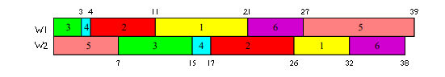

The Project
"You are given n jobs, m workstations and an n×m two-dimensional task matrix T of the time each job will spend at each workstation. Each job becomes available at a specified time and may be processed in only one workstation at a time. Each workstation may process only one job at a time. The goal is to assign a start time for each job at each workstation that minimizes the finish time of the last job."
So, essentially the project is to create a scheduler, which finds the most efficient way to block all of the tasks together. This problem description generalizes to m workstations, though a requirement of all submitted input was that there are 3, so the code created fits that specifically.
Example Input
n m
[time the task becomes available] [finish time for workstation 1 ] [finish time for workstation 2 ]
... ...
6 2
10 10 6
0 7 9
0 3 8
3 1 2
0 12 7
20 6 6
Potential Solution
This provided solution is not necessarily optimal, just a valid solution given the data.
Validity
A solution is valid if it meets the following requirements:
Our Solution
The algorithm that we implemented can be described using the following steps.
Starting at t=0,
In order to produce a more optimal solution, the algorithm was run multiple times to account for the random choices that were being made.
The Competition
This project was done in the form of a competition. We arranged into groups, and each group had to submit a valid input for the problem. Once all of the inputs had been submitted, our algorithm had to be run on each input, and we submitted an output for each one. The group with the best time (in terms of scheduling units, not runtime) for each input won the competition. The year that I took part, there was an unprecedented six-way tie. In the tiebreakers, my team consisting of Azam Abidjanov, Matt Bussing, and I, took first place.